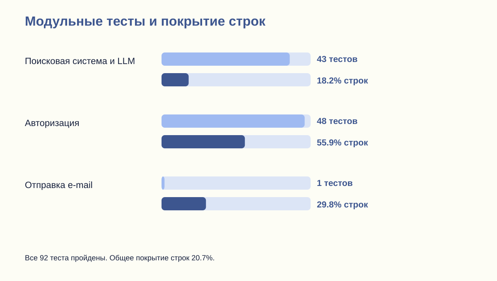
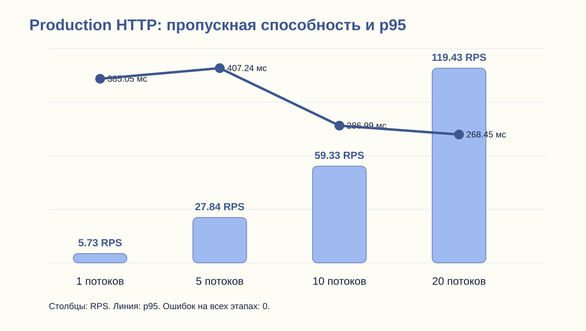
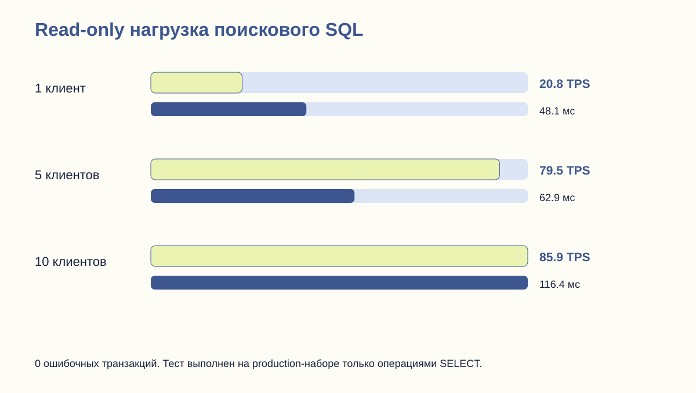
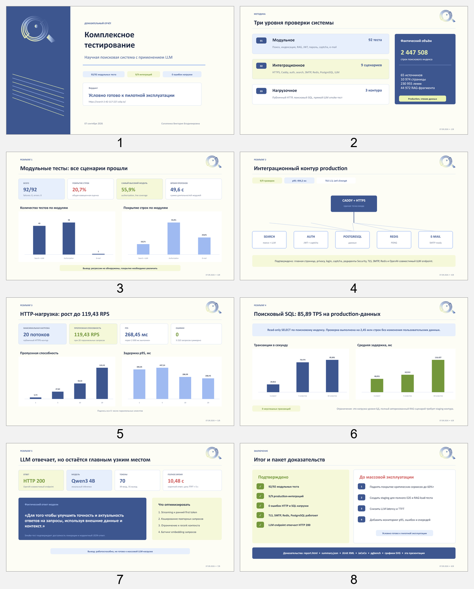

Комплексное тестирование научной поисковой системы с LLM
Модульные, интеграционные и нагрузочные проверки с воспроизводимыми исходными результатами.
Условно готово к пилотной эксплуатации1. Модульное тестирование
Все 92 тестов завершились успешно.
| Модуль | Тесты | Ошибки | Строки | Ветви |
|---|---|---|---|---|
| Поисковая система и LLM | 43 | 0 | 18.2% | 14.9% |
| Авторизация | 48 | 0 | 55.9% | 44.4% |
| Отправка e-mail | 1 | 0 | 29.8% | 0% |
Общее покрытие строк: 20.7%. Это объективная зона роста, а не основание заявлять полную готовность к высокой нагрузке.
2. Интеграционное тестирование
9 из 9 проверок прошли: HTTPS TLS 1.3, публичные страницы, captcha через auth-сервис, защита Swagger, поиска и LLM-метрик.
Внутренние проверки: PostgreSQL healthy, Redis PONG, SMTP ready, сервис авторизации публикует 11 операций, LM Studio возвращает список моделей.
Фактический набор: 65 источников, 10 974 страниц, 2 447 508 строк индекса, 44 972 RAG-фрагментов.
3. Нагрузочное тестирование HTTP
| Параллельность | Запросы | RPS | p95, мс | Ошибки |
|---|---|---|---|---|
| 1 | 58 | 5.73 | 385.05 | 0 |
| 5 | 433 | 27.84 | 407.24 | 0 |
| 10 | 896 | 59.33 | 286.99 | 0 |
| 20 | 1823 | 119.43 | 268.45 | 0 |
4. Нагрузочное тестирование PostgreSQL
| Клиенты | Транзакции | TPS | Среднее, мс | Ошибки |
|---|---|---|---|---|
| 1 | 209 | 20.811252 | 48.051 | 0 |
| 5 | 799 | 79.474288 | 62.913 | 0 |
| 10 | 863 | 85.890645 | 116.427 | 0 |
При 10 клиентах: 85.890645 TPS, средняя задержка 116.427 мс, ошибок 0.
5. Проверка LLM
OpenAI-совместимый endpoint LM Studio ответил HTTP 200, модель local-qwen3-4b.
Время короткого ответа: 10.5 с. Ответ: «Для того чтобы улучшить точность и актуальность ответов на запросы, используя внешние данные и контекст.»
LLM работает, но задержка заметна пользователю. Перед массовым доступом нужен streaming, кэш ответов и измерение time-to-first-token.
Графические доказательства




Презентация и изображения
Скачать итоговую презентацию PowerPoint · Открыть отдельные изображения слайдов

Ограничения
- Покрытие строками составляет менее 60 процентов в поисковом и e-mail модулях.
- Нагрузочный HTTP-тест production выполнен для публичного web-контура без пользовательских данных.
- Поисковый SQL проверен под read-only нагрузкой на фактическом production-наборе, но полный авторизованный RAG-сценарий под нагрузкой не запускался.
- LLM smoke-тест подтверждает доступность модели, однако 10,48 секунды на короткий ответ требуют оптимизации перед массовой эксплуатацией.
Следующие действия
- Поднять покрытие критических сервисов SearchService, DocumentIndexingService, AssistantService и email-контроллера до 60 процентов и выше.
- Добавить отдельный staging-контур с обезличенной копией данных для авторизованных E2E и RAG load-тестов.
- Ввести SLO: p95 поиска до 2 секунд, ошибки до 1 процента, time-to-first-token LLM до 5 секунд.
- Подключить непрерывный мониторинг p95, ошибок, очереди индексации, длины контекста и времени генерации LLM.
Как воспроизвести
Модули: mvn verify в каталогах Searchengine_1, authorization и emailsender.
Интеграция: node scripts/testing/production-check.mjs --base https://search.5-42-117-227.sslip.io/ --output docs/testing/latest/integration-results.json
Безопасная HTTP-нагрузка: node scripts/testing/load-test.mjs --base https://search.5-42-117-227.sslip.io/ --endpoint / --concurrency 20 --duration 15 --output docs/testing/latest/load-c20.json
Серверные read-only проверки запускаются сценариями server-probe.sh, database-load-test.sh и llm-smoke-test.py.
Исходные доказательства
формальный протокол · summary.json · integration-results.json · performance-summary.csv · server-probe.txt · llm-smoke.json · JUnit XML и JaCoCo · pgbench · валидация PPTX